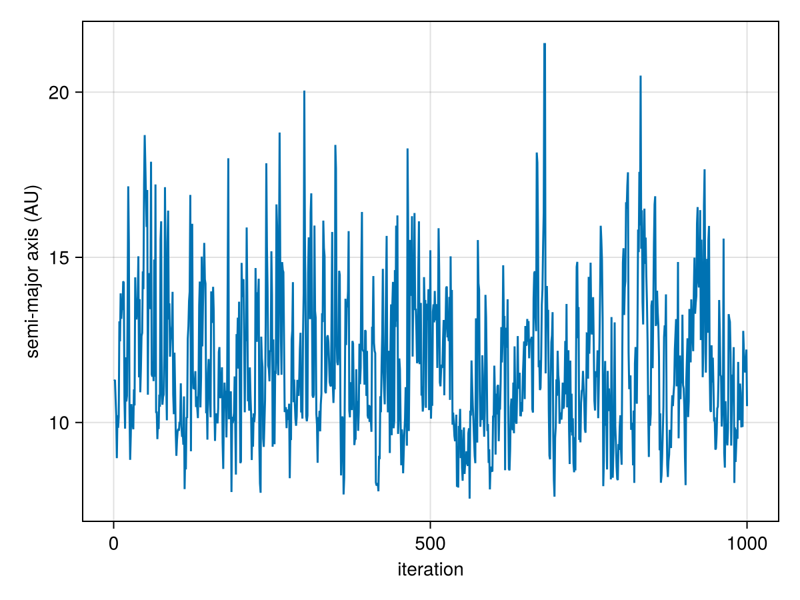
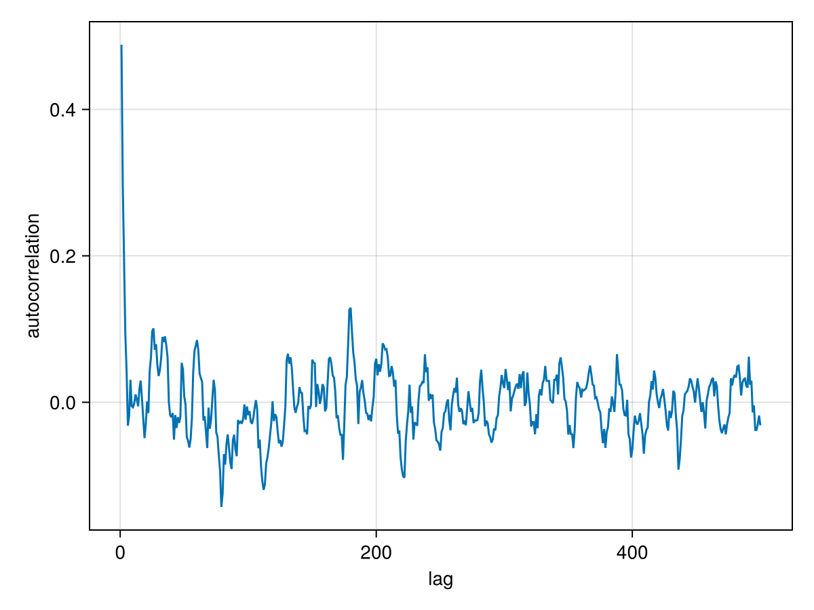
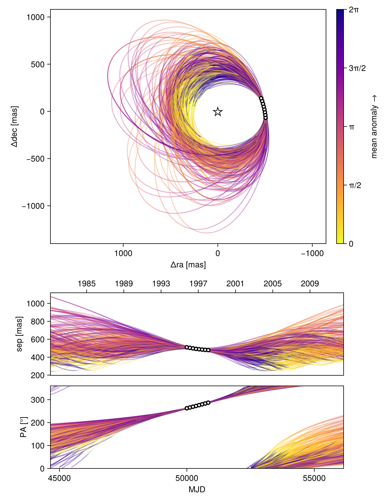
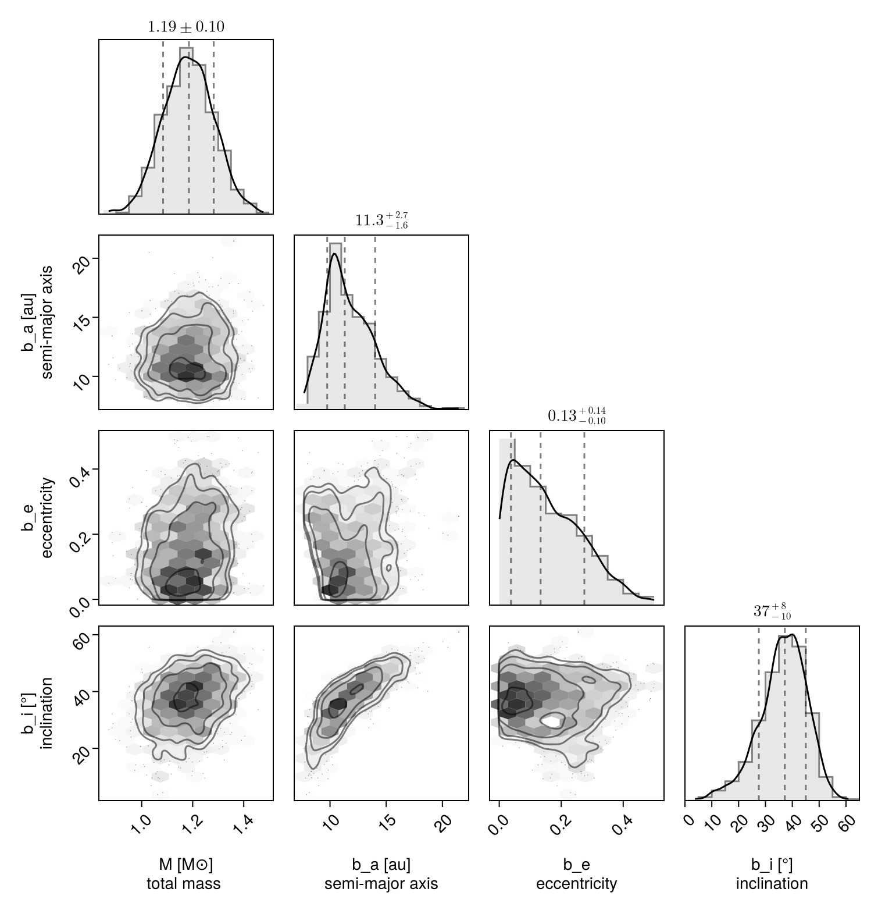

Fit Relative Astrometry
Here is a worked example of a one-planet model fit to relative astrometry (positions measured between the planet and the host star).
TL;DR
Just want to see the code? Copy and paste this example, and accept the prompts to download the required packages. It is fully explained in the tutorial below. It may take up to 15 minutes to compile everything, but should run in <10s afterwards.
using Octofitter,
Distributions,
CairoMakie,
PairPlots
astrom_like = PlanetRelAstromLikelihood(
# Your data here:
# units are MJD, mas, mas, mas, mas, and correlation.
(epoch = 50000, ra = -505.7637580573554, dec = -66.92982418533026, σ_ra = 10, σ_dec = 10, cor=0),
(epoch = 50120, ra = -502.570356287689, dec = -37.47217527025044, σ_ra = 10, σ_dec = 10, cor=0),
(epoch = 50240, ra = -498.2089148883798, dec = -7.927548139010479, σ_ra = 10, σ_dec = 10, cor=0),
(epoch = 50360, ra = -492.67768482682357, dec = 21.63557115669823, σ_ra = 10, σ_dec = 10, cor=0),
(epoch = 50480, ra = -485.9770335870402, dec = 51.147204404903704, σ_ra = 10, σ_dec = 10, cor=0),
(epoch = 50600, ra = -478.1095526888573, dec = 80.53589069730698, σ_ra = 10, σ_dec = 10, cor=0),
(epoch = 50720, ra = -469.0801731788123, dec = 109.72870493064629, σ_ra = 10, σ_dec = 10, cor=0),
(epoch = 50840, ra = -458.89628893460525, dec = 138.65128697876773, σ_ra = 10, σ_dec = 10, cor=0),
)
@planet b Visual{KepOrbit} begin
a ~ Uniform(0, 100) # AU
e ~ Uniform(0.0, 0.99)
i ~ Sine() # radians
ω ~ UniformCircular()
Ω ~ UniformCircular()
θ ~ UniformCircular()
tp = θ_at_epoch_to_tperi(system,b,50000) # use MJD epoch of your data here!!
end astrom_like
@system Tutoria begin # replace Tutoria with the name of your planetary system
M ~ truncated(Normal(1.2, 0.1), lower=0)
plx ~ truncated(Normal(50.0, 0.02), lower=0)
end b
model = Octofitter.LogDensityModel(Tutoria)
chain = octofit(model)
display(chain) # see results
plt = octoplot(model, chain) # plot orbits
display(plt)
plt_corn = octocorner(model, chain, small=true)
display(plt_corn)
Octofitter.savechain("mychain.fits", chain)Tutorial
Start by loading the Octofitter and Distributions packages:
using Octofitter, DistributionsSpecifying the data
We will create a likelihood object to contain our relative astrometry data. We can specify this data in several formats. It can be listed in the code or loaded from a file (eg. a CSV file, FITS table, or SQL database).
astrom_like = PlanetRelAstromLikelihood(
(epoch = 50000, ra = -505.7637580573554, dec = -66.92982418533026, σ_ra = 10, σ_dec = 10, cor=0),
(epoch = 50120, ra = -502.570356287689, dec = -37.47217527025044, σ_ra = 10, σ_dec = 10, cor=0),
(epoch = 50240, ra = -498.2089148883798, dec = -7.927548139010479, σ_ra = 10, σ_dec = 10, cor=0),
(epoch = 50360, ra = -492.67768482682357, dec = 21.63557115669823, σ_ra = 10, σ_dec = 10, cor=0),
(epoch = 50480, ra = -485.9770335870402, dec = 51.147204404903704, σ_ra = 10, σ_dec = 10, cor=0),
(epoch = 50600, ra = -478.1095526888573, dec = 80.53589069730698, σ_ra = 10, σ_dec = 10, cor=0),
(epoch = 50720, ra = -469.0801731788123, dec = 109.72870493064629, σ_ra = 10, σ_dec = 10, cor=0),
(epoch = 50840, ra = -458.89628893460525, dec = 138.65128697876773, σ_ra = 10, σ_dec = 10, cor=0),
)PlanetRelAstromLikelihood Table with 6 columns and 8 rows:
epoch ra dec σ_ra σ_dec cor
┌────────────────────────────────────────────
1 │ 50000 -505.764 -66.9298 10 10 0
2 │ 50120 -502.57 -37.4722 10 10 0
3 │ 50240 -498.209 -7.92755 10 10 0
4 │ 50360 -492.678 21.6356 10 10 0
5 │ 50480 -485.977 51.1472 10 10 0
6 │ 50600 -478.11 80.5359 10 10 0
7 │ 50720 -469.08 109.729 10 10 0
8 │ 50840 -458.896 138.651 10 10 0In Octofitter, epoch is always the modified Julian date (measured in days). If you're not sure what this is, you can get started by just putting in arbitrary time offsets measured in days.
In this case, we specified ra and dec offsets in milliarcseconds. We could instead specify sep (projected separation) in milliarcseconds and pa in radians. You cannot mix the two formats in a single PlanetRelAstromLikelihood but you can create two different likelihood objects, one for each format.
You can also specify it in separation (mas) and positon angle (rad):
astrom_like_2 = PlanetRelAstromLikelihood(
(epoch = 50000, sep = 505.7637580573554, pa = deg2rad(24.1), σ_sep = 10, σ_pa =deg2rad(1.2), cor=0),
# ...etc.
)Another way we could specify the data is by column:
astrom_like = PlanetRelAstromLikelihood(Table(;
epoch= [50000, 50120, 50240, 50360,50480, 50600, 50720, 50840,],
ra = [-505.764, -502.57, -498.209, -492.678,-485.977, -478.11, -469.08, -458.896,],
dec = [-66.9298, -37.4722, -7.92755, 21.6356, 51.1472, 80.5359, 109.729, 138.651, ],
σ_ra = fill(10.0, 8),
σ_dec = fill(10.0, 8),
cor = fill(0.0, 8)
))PlanetRelAstromLikelihood Table with 6 columns and 8 rows:
epoch ra dec σ_ra σ_dec cor
┌────────────────────────────────────────────
1 │ 50000 -505.764 -66.9298 10.0 10.0 0.0
2 │ 50120 -502.57 -37.4722 10.0 10.0 0.0
3 │ 50240 -498.209 -7.92755 10.0 10.0 0.0
4 │ 50360 -492.678 21.6356 10.0 10.0 0.0
5 │ 50480 -485.977 51.1472 10.0 10.0 0.0
6 │ 50600 -478.11 80.5359 10.0 10.0 0.0
7 │ 50720 -469.08 109.729 10.0 10.0 0.0
8 │ 50840 -458.896 138.651 10.0 10.0 0.0Finally we could also load the data from a file somewhere. Here is an example of loading a CSV:
using CSV # must install CSV.jl first
astrom_like = CSV.read("mydata.csv", PlanetRelAstromLikelihood)You can also pass a DataFrame or any other table format.
Creating a planet
We now create our first planet model. Let's name it planet b. The name of the planet will be used in the output results.
In Octofitter, we specify planet and system models using a "probabilistic programming language". Quantities with a ~ are random variables. The distributions on the right hand sides are priors. You must specify a proper prior for any quantity which is allowed to vary.
We now create our planet b model using the @planet macro.
@planet b Visual{KepOrbit} begin
a ~ truncated(Normal(10, 4), lower=0, upper=100)
e ~ Uniform(0.0, 0.5)
i ~ Sine()
ω ~ UniformCircular()
Ω ~ UniformCircular()
θ ~ UniformCircular()
tp = θ_at_epoch_to_tperi(system,b,50420)
end astrom_likeIn the model definition, b is the name of the planet (it can be anything), Visual{KepOrbit} is the type of orbit parameterization (see the PlanetOrbits.jl documentation page).
After the begin comes our variable specification. Quantities with a ~ are random variables aka. our priors. You must specify a proper prior for any quantity which is allowed to vary. "Uninformative" priors like 1/x must be given bounds, and can be specified with LogUniform(lower, upper).
Make sure that variables like mass and eccentricity can't be negative. You can pass a distribution to truncated to prevent this, e.g. M ~ truncated(Normal(1, 0.1),lower=0).
Priors can be any univariate distribution from the Distributions.jl package.
For a KepOrbit you must specify the following parameters:
a: Semi-major axis, astronomical units (AU)i: Inclination, radianse: Eccentricity in the range [0, 1)ω: Argument of periastron, radiusΩ: Longitude of the ascending node, radians.tp: Epoch of periastron passage
Many different distributions are supported as priors, including Uniform, LogNormal, LogUniform, Sine, and Beta. See the section on Priors for more information. The parameters can be specified in any order.
You can also hardcode a particular value for any parameter if you don't want it to vary. Simply replace eg. e ~ Uniform(0, 0.999) with e = 0.1. This = syntax works for arbitrary mathematical expressions and even functions. We use it here to reparameterize tp.
tp is a date which sets the location of the planet around its orbit. It repeats every orbital period and the orbital period depends on the scale of the orbit. This makes it quite hard to sample from. We therefore reparameterize using θ parameter, representing the position angle of the planet at a given reference epoch. This parameterization speeds up sampling quite a bit!
After the variables block are zero or more Likelihood objects. These are observations specific to a given planet that you would like to include in the model. If you would like to sample from the priors only, don't pass in any observations.
For this example, we specify PlanetRelAstromLikelihood block. This is where you can list the position of a planet relative to the star at different epochs.
When you have created your planet, you should see the following output. If you don't, you can run display(b) to force the text to be output:
Planet b
Derived:
ω, Ω, θ, tp,
Priors:
a Truncated(Distributions.Normal{Float64}(μ=10.0, σ=4.0); lower=0.0, upper=100.0)
e Distributions.Uniform{Float64}(a=0.0, b=0.5)
i Sine()
ωy Distributions.Normal{Float64}(μ=0.0, σ=1.0)
ωx Distributions.Normal{Float64}(μ=0.0, σ=1.0)
Ωy Distributions.Normal{Float64}(μ=0.0, σ=1.0)
Ωx Distributions.Normal{Float64}(μ=0.0, σ=1.0)
θy Distributions.Normal{Float64}(μ=0.0, σ=1.0)
θx Distributions.Normal{Float64}(μ=0.0, σ=1.0)
Octofitter.UnitLengthPrior{:ωy, :ωx}: √(ωy^2+ωx^2) ~ LogNormal(log(1), 0.02)
Octofitter.UnitLengthPrior{:Ωy, :Ωx}: √(Ωy^2+Ωx^2) ~ LogNormal(log(1), 0.02)
Octofitter.UnitLengthPrior{:θy, :θx}: √(θy^2+θx^2) ~ LogNormal(log(1), 0.02)
PlanetRelAstromLikelihood Table with 6 columns and 8 rows:
epoch ra dec σ_ra σ_dec cor
┌────────────────────────────────────────────
1 │ 50000 -505.764 -66.9298 10.0 10.0 0.0
2 │ 50120 -502.57 -37.4722 10.0 10.0 0.0
3 │ 50240 -498.209 -7.92755 10.0 10.0 0.0
4 │ 50360 -492.678 21.6356 10.0 10.0 0.0
5 │ 50480 -485.977 51.1472 10.0 10.0 0.0
6 │ 50600 -478.11 80.5359 10.0 10.0 0.0
7 │ 50720 -469.08 109.729 10.0 10.0 0.0
8 │ 50840 -458.896 138.651 10.0 10.0 0.0
Creating a system
A system represents a host star with one or more planets. Properties of the whole system are specified here, like parallax distance and mass of the star. This is also where you will supply data like images, astrometric acceleration, or stellar radial velocity since they don't belong to any planet in particular.
@system Tutoria begin
M ~ truncated(Normal(1.2, 0.1), lower=0)
plx ~ truncated(Normal(50.0, 0.02), lower=0)
end bTutoria is the name we have given to the system. It could be eg PDS70, or anything that will help you keep track of the results.
The variables block works just like it does for planets. Here, the two parameters you must provide are:
M: Gravitational parameter of the central body, expressed in units of Solar mass.plx: Distance to the system expressed in milliarcseconds of parallax.
M is always required for all choices of parameterizations supported by PlanetOrbits.jl. plx is needed due to our choice to use Visual{...} orbit and relative astrometry. The prior on plx can be looked up from GAIA for many targets by using the function gaia_plx:
plx ~ gaia_plx(;gaia_id=12345678910)After that, just list any planets that you want orbiting the star. Here, we pass planet b.
This is also where we could pass likelihood objects for system-wide data like stellar radial velocity.
You can display your system object by running display(Tutoria) (or whatever you chose to name your system).
Prepare model
We now convert our declarative model into efficient, compiled code:
model = Octofitter.LogDensityModel(Tutoria)LogDensityModel for System Tutoria of dimension 11 with fields .ℓπcallback and .∇ℓπcallback
This type implements the julia LogDensityProblems.jl interface and can be passed to a wide variety of samplers.
Sampling
Now we are ready to draw samples from the posterior:
# Provide a seeded random number generator for reproducibility of this example.
# This is not necessary in general: you may simply omit the RNG parameter if you prefer.
using Random
rng = Random.Xoshiro(1234)
chain = octofit(rng, model)Chains MCMC chain (1000×28×1 Array{Float64, 3}):
Iterations = 1:1:1000
Number of chains = 1
Samples per chain = 1000
Wall duration = 3.78 seconds
Compute duration = 3.78 seconds
parameters = M, plx, b_a, b_e, b_i, b_ωy, b_ωx, b_Ωy, b_Ωx, b_θy, b_θx, b_ω, b_Ω, b_θ, b_tp
internals = n_steps, is_accept, acceptance_rate, hamiltonian_energy, hamiltonian_energy_error, max_hamiltonian_energy_error, tree_depth, numerical_error, step_size, nom_step_size, is_adapt, loglike, logpost, tree_depth, numerical_error
Summary Statistics
parameters mean std mcse ess_bulk ess_tail rh ⋯
Symbol Float64 Float64 Float64 Float64 Float64 Float ⋯
M 1.1830 0.0987 0.0041 588.5234 559.6585 0.99 ⋯
plx 49.9998 0.0198 0.0007 807.5271 491.5003 1.00 ⋯
b_a 11.7859 2.2539 0.1786 151.7851 432.9451 1.00 ⋯
b_e 0.1540 0.1125 0.0064 309.9308 349.0791 1.00 ⋯
b_i 0.6368 0.1561 0.0096 260.4850 349.3751 1.00 ⋯
b_ωy 0.0673 0.7448 0.0753 137.5995 570.1683 1.00 ⋯
b_ωx 0.0943 0.6745 0.0664 126.1967 684.6942 1.01 ⋯
b_Ωy 0.2142 0.7369 0.1297 46.1919 154.3999 1.00 ⋯
b_Ωx 0.1441 0.6366 0.1263 30.5441 216.3796 0.99 ⋯
b_θy 0.0743 0.0104 0.0003 895.8649 790.6797 0.99 ⋯
b_θx -0.9950 0.1010 0.0041 644.2259 449.3318 1.00 ⋯
b_ω -0.0507 1.7666 0.1614 163.0970 456.8498 1.01 ⋯
b_Ω -0.1838 1.6037 0.2978 44.2263 173.5645 1.00 ⋯
b_θ -1.4962 0.0072 0.0002 952.4142 792.0894 0.99 ⋯
b_tp 42909.3621 4979.8582 333.8317 222.8654 460.5770 1.01 ⋯
2 columns omitted
Quantiles
parameters 2.5% 25.0% 50.0% 75.0% 97.5%
Symbol Float64 Float64 Float64 Float64 Float64
M 0.9950 1.1168 1.1852 1.2485 1.3770
plx 49.9601 49.9866 49.9996 50.0137 50.0398
b_a 8.3128 10.1627 11.3160 13.1748 16.8889
b_e 0.0051 0.0602 0.1334 0.2317 0.4060
b_i 0.2701 0.5531 0.6496 0.7441 0.8986
b_ωy -1.0959 -0.6987 0.1753 0.7861 1.0782
b_ωx -1.0289 -0.5356 0.1824 0.7042 1.0782
b_Ωy -1.0699 -0.5050 0.5011 0.8577 1.0883
b_Ωx -1.0117 -0.3953 0.2721 0.6958 1.0678
b_θy 0.0551 0.0668 0.0740 0.0810 0.0960
b_θx -1.2057 -1.0621 -0.9919 -0.9260 -0.8110
b_ω -3.0059 -1.7772 0.3187 1.1756 3.0411
b_Ω -2.9799 -1.7810 0.3158 0.8904 2.8117
b_θ -1.5100 -1.5014 -1.4963 -1.4913 -1.4821
b_tp 31300.8672 39955.8183 43675.8415 46469.5633 50022.0782
You will get an output that looks something like this with a progress bar that updates every second or so. You can reduce or completely silence the output by reducing the verbosity value down to 0.
The sampler will begin by drawing orbits randomly from the priors (50,000 by default). It will then pick the orbit with the highest posterior density as a starting point. These are then passed to AdvancedHMC to adapt following the Stan windowed adaption scheme.
Once complete, the chain object will hold the sampler results. Displaying it prints out a summary table like the one shown above.
For a basic model like this, sampl]ing should take less than a minute on a typical laptop.
Diagnostics
The first thing you should do with your results is check a few diagnostics to make sure the sampler converged as intended.
A few things to watch out for: check that you aren't getting many (any, really) numerical errors (ratio_divergent_transitions). This likely indicates a problem with your model: either invalid values of one or more parameters are encountered (e.g. the prior on semi-major axis includes negative values) or that there is a region of very high curvature that is failing to sample properly. This latter issue can lead to a bias in your results.
One common mistake is to use a distribution like Normal(10,3) for semi-major axis. This left hand side of this distribution includes negative values which are not physically possible. A better choice is a truncated(Normal(10,3), lower=0) distribution.
You may see some warnings during initial step-size adaptation. These are probably nothing to worry about if sampling proceeds normally afterwards.
You should also check the acceptance rate (mean_accept) is reasonably high and the mean tree depth (mean_tree_depth) is reasonable (~4-8). Lower than this and the sampler is taking steps that are too large and encountering a U-turn very quicky. Much larger than this and it might be being too conservative. The default maximum tree depth is 10. These don't affect the accuracy of your results, but do affect the efficiency of the sampling.
Next, you can make a trace plot of different variabes to visually inspect the chain:
using CairoMakie
lines(
chain["b_a"][:],
axis=(;
xlabel="iteration",
ylabel="semi-major axis (AU)"
)
)
And an auto-correlation plot:
using StatsBase
using CairoMakie
lines(
autocor(chain["b_e"][:], 1:500),
axis=(;
xlabel="lag",
ylabel="autocorrelation",
)
)
This plot shows that these samples are not correlated after only above 5 steps. No thinning is necessary.
To confirm convergence, you may also examine the rhat column from chains. This diagnostic approaches 1 as the chains converge and should at the very least equal 1.0 to one significant digit (3 recommended).
Finaly, if you ran multiple chains (see later tutorials to learn how), you can run
using MCMCChains
merged_chains = chainscat(chain1, chain2, chain3)
gelmandiag(merged_chains)As an additional convergence test.
Analysis
As a first pass, let's plot a sample of orbits drawn from the posterior. The function octoplot is a conveninient way to generate a 9-panel plot of velocities and position:
using CairoMakie
octoplot(model,chain)
This function draws orbits from the posterior and displays them in a plot. Any astrometry points are overplotted.
Pair Plot
A very useful visualization of our results is a pair-plot, or corner plot. We can use the octocorner function and our PairPlots.jl package for this purpose:
using CairoMakie
using PairPlots
octocorner(model, chain, small=true)
Remove small=true to display all variables, or run pairplot(chain) to include internal variables.
In this case, the sampler was able to resolve the complicated degeneracies between eccentricity, the longitude of the ascending node, and argument of periapsis.